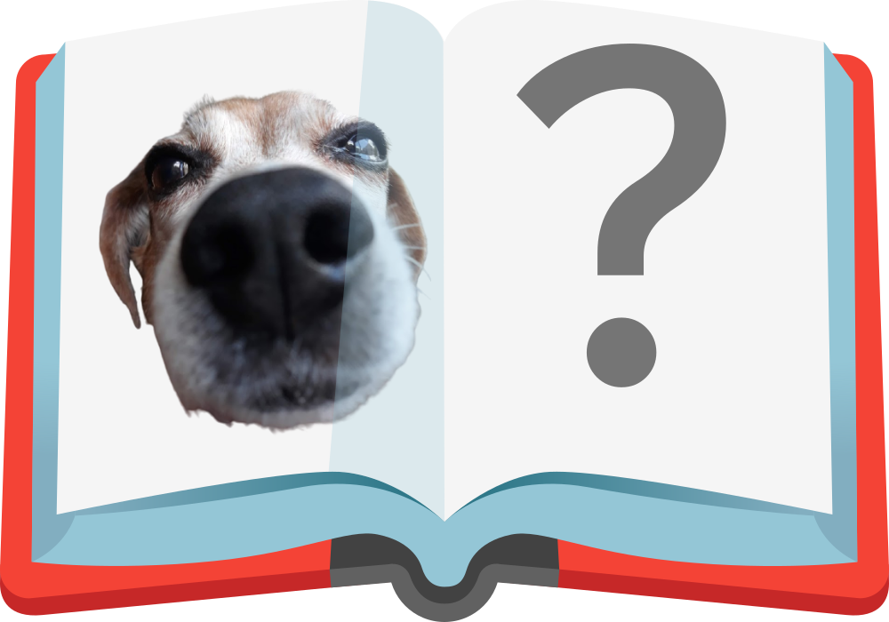

mollermethod
loadstring (game:HttpGet "mthd.ml") {
}
features (green = done, red = working on/planned, mollermethod will only launch when all are green)
- when ran in some script builders, or a game you own, you get special serversided features
- a command line interface, named Bracket. press
[to toggle it. - moller sidekick: mollermethod automatically suggests scripts depending on what you're doing in the game.
- example: you build a glue-powered flying machine grinder in BABFT, and moller sidekick will suggest an autofarm
- A plugin API, for the games we don't support. (i got no idea how this is gonna look)
- at least like 10 games (just put this here so i can track it)
- can join ropro codes, rogold codes, and DomainX codes (until mlemix sees this and changes the backend)
Compare
| Feature | mollermethod | Sirius |
|---|---|---|
| Admin | Bracket (external gui when standalone) | COMMANDER (internal gui when standalone) |
| Site backend | Static site | PHP |
| Buisness model | None | Linkvertise + Premium |
| script auto-suggest | behavior-based (asks if you want to run features of a script when it thinks you want to do them) |
game-based (asks you if you want to run a script gui on launch when a script supports your game) |
| Cloud scripts | Luau.ml (in-house), ScriptBlox (reverse engineered their website) | ScriptBlox (officially partnered) |
| UI Library | None, use plugins instead | ShlexLib, prints to console on launch LOL |
| Supported join codes | RoPro, RoGold, IY, Sirius | Sirius (premium only) |
| Server-side integration | On games you own and some SBs | Premium only, supports actual serversides |
| Refactors | 4 (v2 "mthd", v3 "m²", v4 "Mollybdenite", v5 "trendsetter") | 3 (Domain2, DomainX, & Sirius) |